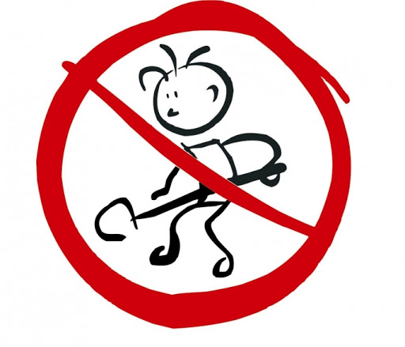
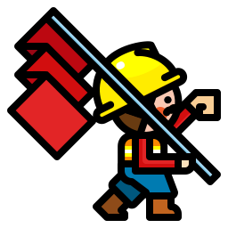

Objetivos principais

Crescimento Economico
Sustentar o crescimento econômico per capita de acordo com as circunstâncias nacionais e, em particular, um crescimento anual de pelo menos 7% do produto interno bruto [PIB] nos países menos desenvolvidos.

Trabalho Ideal
Até 2030, alcançar o emprego pleno e produtivo e trabalho decente para todas as mulheres e homens, inclusive para os jovens e as pessoas com deficiência, e remuneração igual para trabalho de igual valor.
Extinguir o Trabalho Infantil
Tomar medidas imediatas e eficazes para erradicar o trabalho forçado, acabar com a escravidão moderna e o tráfico de pessoas, e assegurar a proibição e eliminação das piores formas de trabalho infantil, incluindo recrutamento e utilização de crianças-soldado, e até 2025 acabar com o trabalho infantil em todas as suas formas.
Direitos Trabalhistas
Proteger os direitos trabalhistas e promover ambientes de trabalho seguros e protegidos para todos os trabalhadores, incluindo os trabalhadores migrantes, em particular as mulheres migrantes, e pessoas em empregos precários